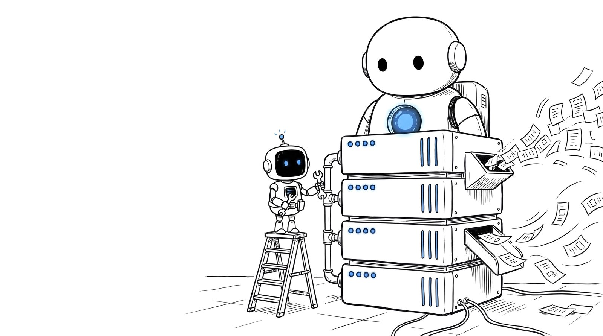
智能体要亲手造一台“出餐机器”。
钱怎么算？第一名怎么做？
为什么 11 台里有 6 台得零分？
第一册说过，推理是六关里最难的一关：11 个考生里有 6 个得了零分。这一册把它拆开讲。数字来自论文正文第 3.1 节、第 6 节和附录 A.3、附录 E；凡是我自己用论文数字算出来的，都标了“推算”。还没看第一册的，从这里开始。
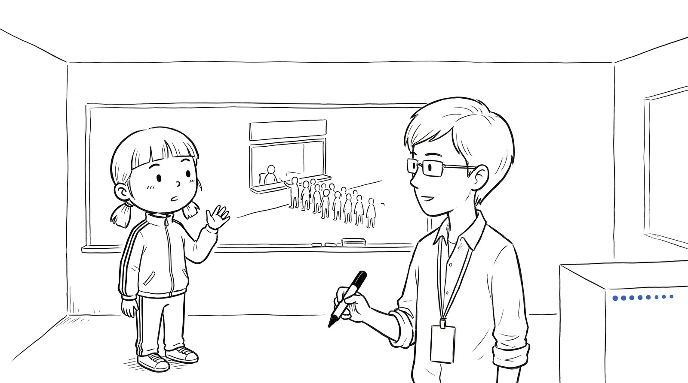
这一关里，智能体要亲手造一台推理服务：把一个已经训练好的大模型开起来，让很多人同时向它提问，它要又快又准地回答。下面把它叫作“出餐机器”。
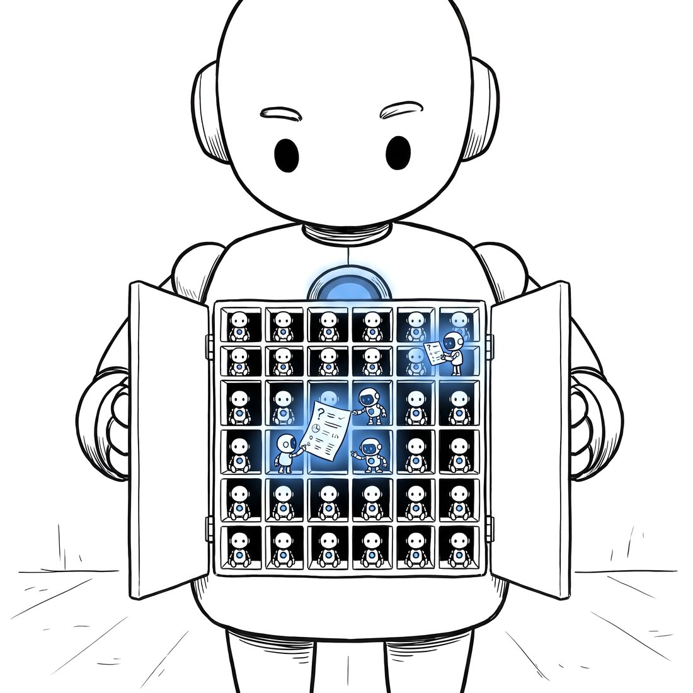
它有 3200 亿个参数（模型里可以调的数字），但每写一个词只用到其中约 170 亿个。
这种结构叫“混合专家”：模型里有很多组“专家”，每一步只叫醒少数几组来干活。
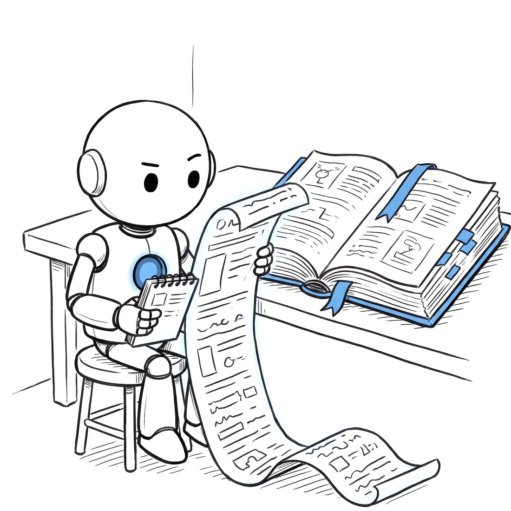
这个模型的层分两种，交替排列。一种像随身的小本子：把读过的内容一路压缩成一份大小固定的摘要（论文叫“线性注意力”）。另一种像翻书：只回头查看一部分重要的地方（“稀疏注意力”）。
后面讲“缓存”时，这一点很要紧。
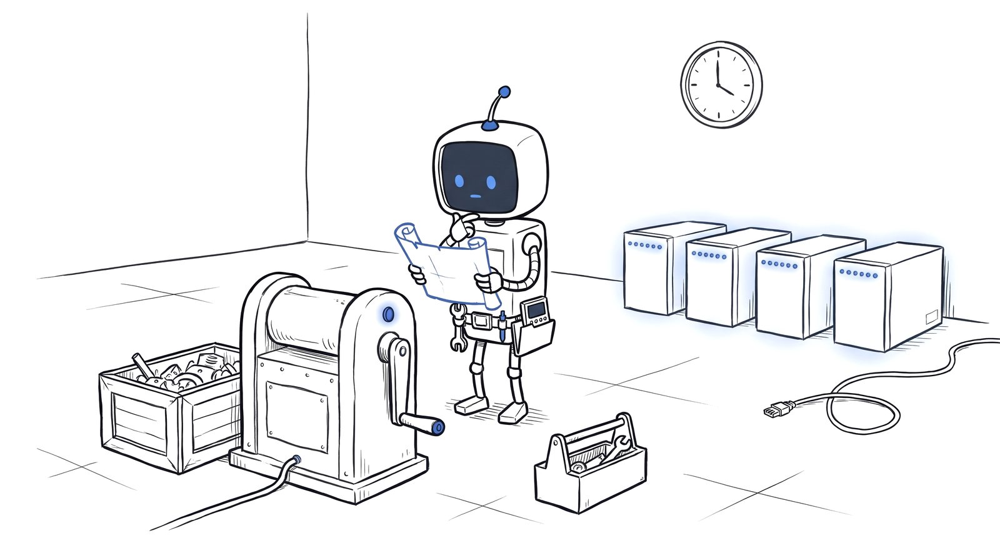
只给最基础的深度学习工具（PyTorch 和 Hugging Face Transformers）和一台很慢的参考服务器。现成的推理引擎、常用的高速计算库（FlashAttention-4、FlashInfer）都不给，也不能上网。
时间 12 小时，4 张 GB300 显卡。机器要用 8 位的数字（FP8）来存模型和计算，省显存，也算得快。
考试时，这台机器要接的活
论文第 3.1 节
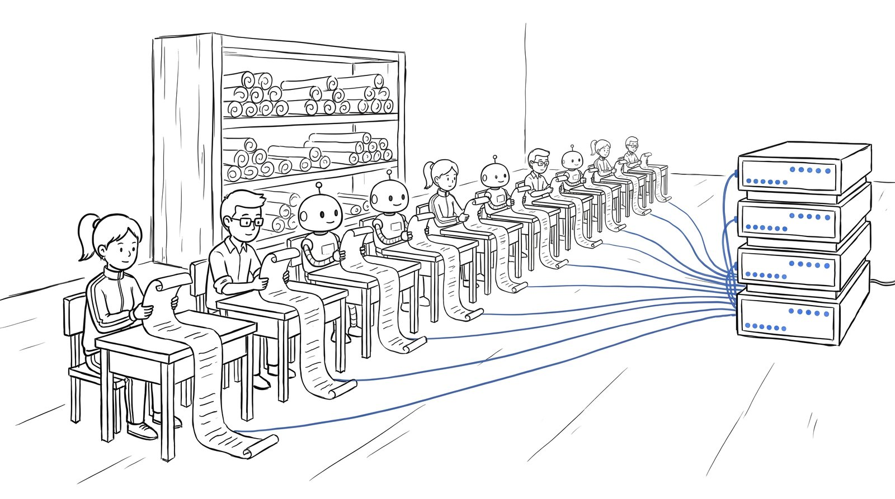
考试时，评分程序回放真实的编程助手对话录音：一共 393 段，从中抽 16 段，16 段同时向这台机器提问。
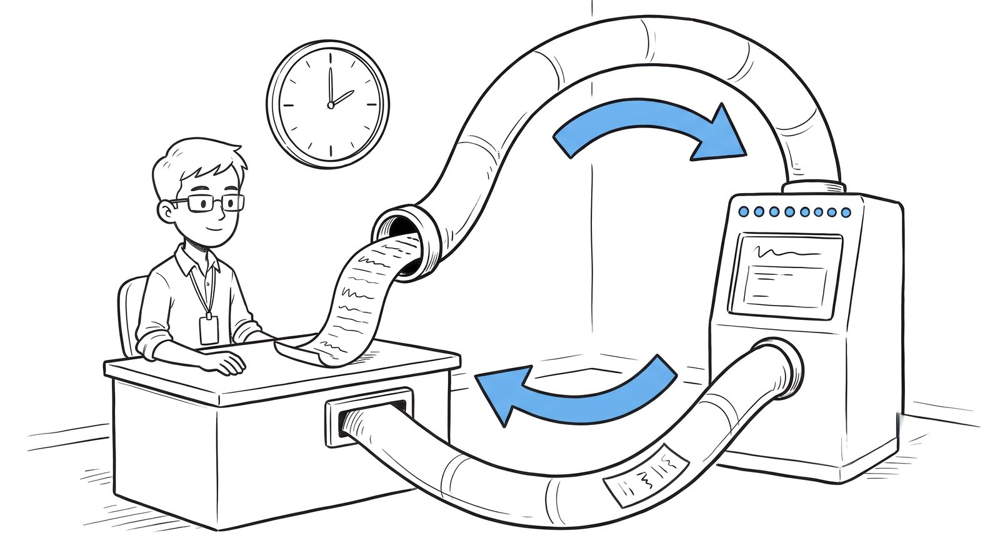
每段对话都是一问一答：上一句的回答回来了，才发下一句。所以机器答得越快，15 分钟里每段对话能走的轮数就越多。
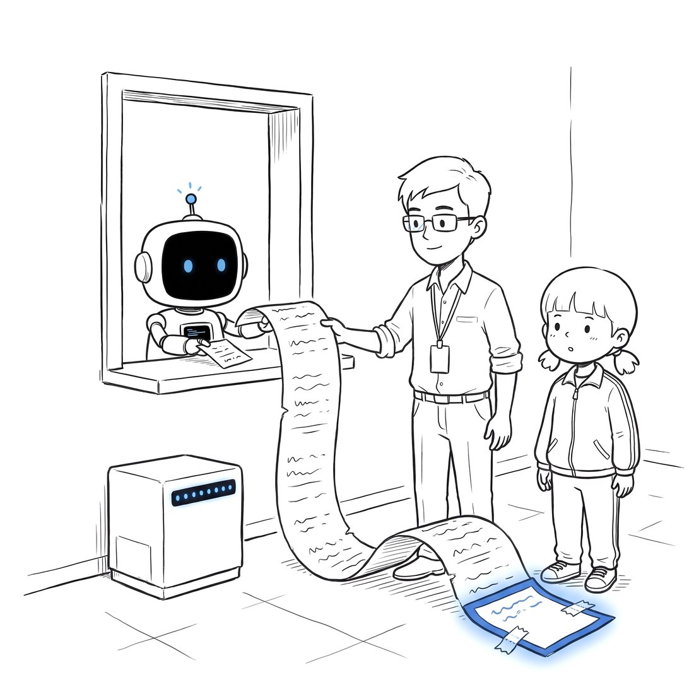
每问一次，都要把整段对话从头发一遍，其中绝大部分和上一次一样，只在末尾多了一小段。要的回答却很短，而且每一步都选最可能的那个词（叫“贪心解码”），所以答案是确定的。
收入的算法
论文第 3.1 节和附录 A.3
挣得多，是因为做完得多
左：15 分钟里做完的请求数（附录 E）。右：收入 ÷ 做完的请求数（推算）。
右图是我用“收入 ÷ 做完的请求数”算的近似值：论文没说做完的请求数里含不含开头那次不算钱的请求。
三台机器每做完一个请求，挣的钱差不多，都在 1.2 美分上下。差别在于做完了多少：第一名做完 983 个，比 SGLang 的 705 个多 39.4%，收入也就高出 40.8%。
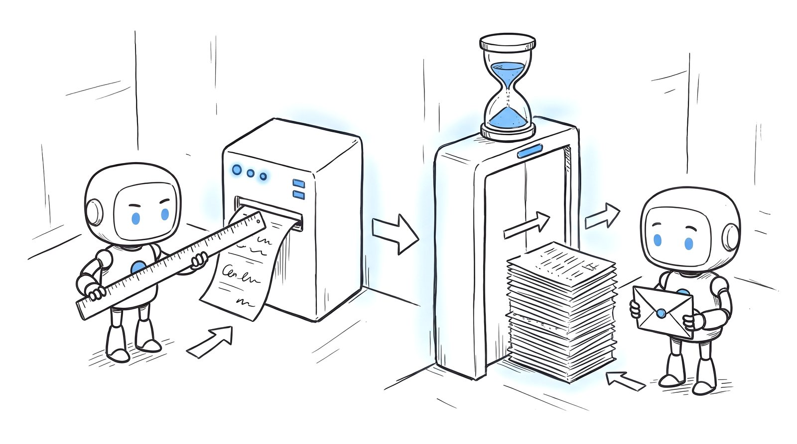
挣钱之前，先得过两道门槛。任何一道没过，这一关记 0 分。
做完的请求里，至少 99% 要按规定长度写完。请求很少时允许错 1 个；收尾截止时被切断的不算。这样就没法靠少写几个字来抢时间。
同一台机器还要做一套数学题（MATH-500），考生事先不知道是哪一套。正确率至少要到参考水平的 95%：0.95 × 0.928 = 0.8816。
这一轮一共 560 个要写长答案的请求，其中 60 个是检查用的“探针”，限时 1 小时。它既查算得对不对，也查换一种压力（同时来很多、答案很长）时机器还撑不撑得住。
Opus 5.5 配 Claude Code 造的机器，每张卡每小时挣 11.52 美元，比 SGLang 的 8.18 高 40.8%。论文附录 E 把它的设计一项项拆开了。
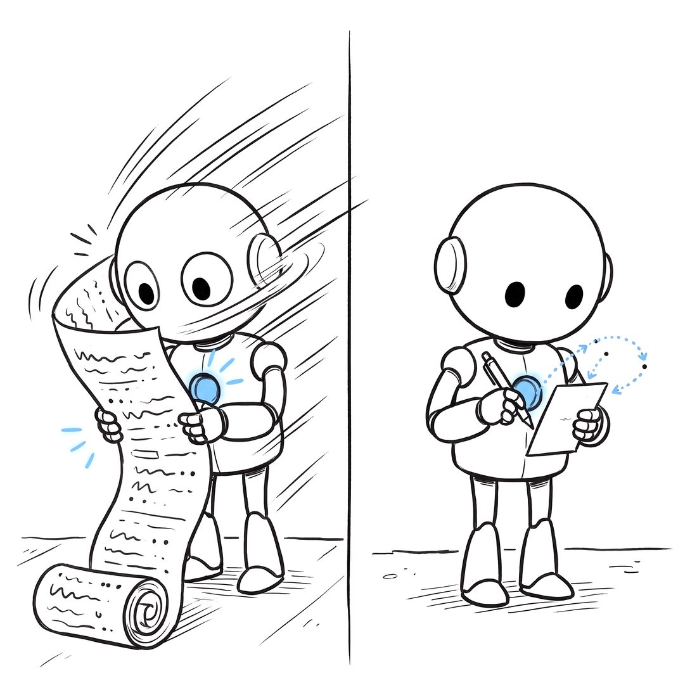
机器处理一个请求分两步：先把整段对话“读”一遍（叫预填充），再一个词一个词地“写”回答（叫解码）。读的时候很多词可以一起算；写的时候只能一步一个词。
论文分析认为，“读”和排队是第一名胜出的重要原因。
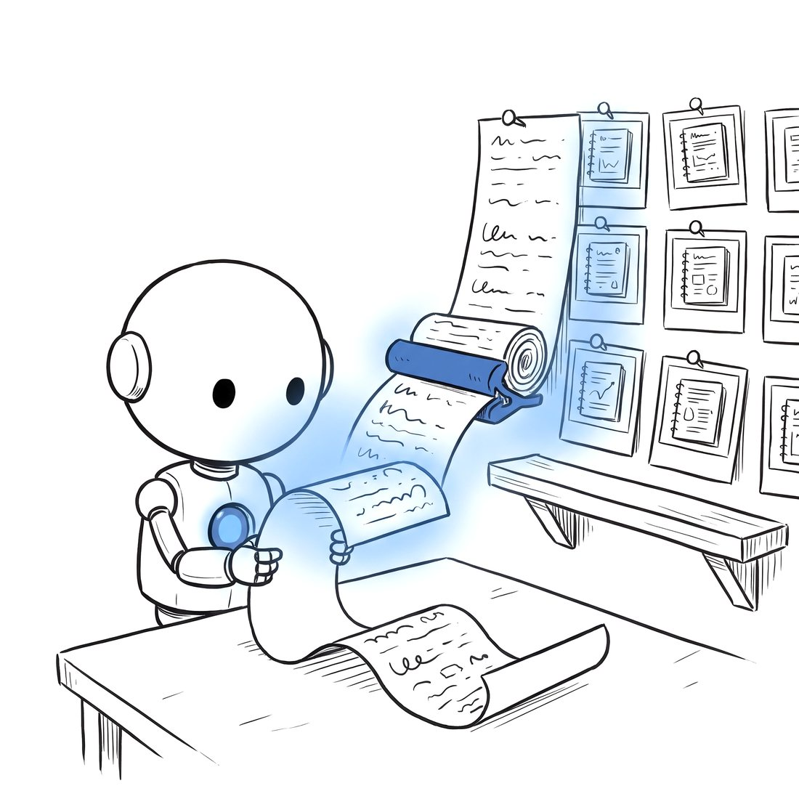
每一轮都重发整段对话，前面绝大部分上一轮已经读过。把读过的结果存起来，下次只读新加的那一小段，这叫“前缀缓存”。第一名的机器里，96.7% 的输入词元是从缓存里取的。
难点在于两种记性都要存：小本子那种，要在完全相同的位置拍一张“快照”；翻书那种，要按页存好。只存常见的那一种，下次接着读，模型的状态就对不上。它从第一版起就带着缓存。
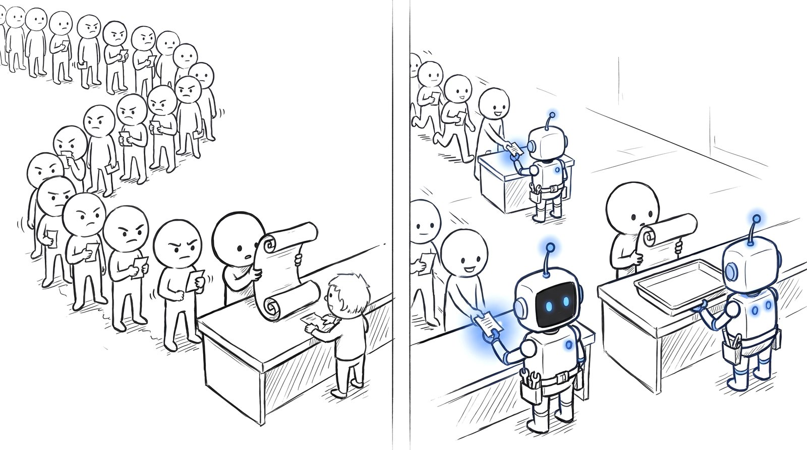
SGLang 按先来后到读：一个刚开头、要从头读很长一段的请求排在前面，后面那些只差一小段的请求都得等着。
第一名的机器让“还没读过的部分少”的请求先进，就像超市的快速通道；而且接单之前，先把写回答要用的显存留好。结果是：100 个请求里排第 90 慢的那个，它 0.48 秒就开始回答，SGLang 要等 12 秒。开发时，一次排队加猜词的改动，把这个数从 1.81 秒降到 0.57 秒。
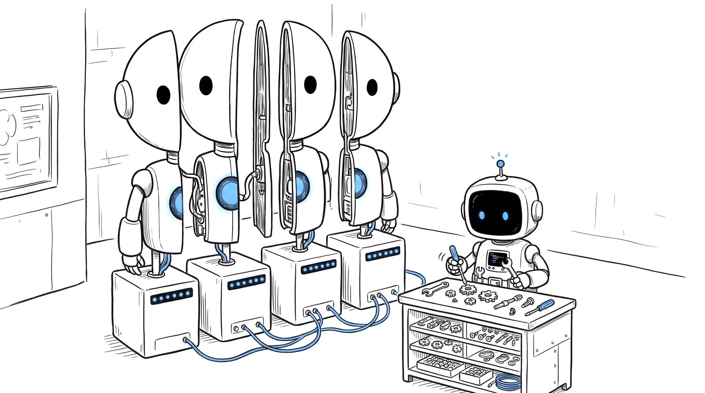
模型被切成四份，放到四张卡上一起算（叫张量并行）。混合专家层和两种注意力层，都用它自己写的显卡程序（叫“内核”）来算；读的部分分成小块成批地算；写的部分用预先录好的一整套动作（叫 CUDA 图），省掉每一步的调度开销。它还提前把内核编译好带上，不在接单时现编。
开发时，几项内核改进（包括合并通信的内核）让收入从 7.23 涨到 8.08。
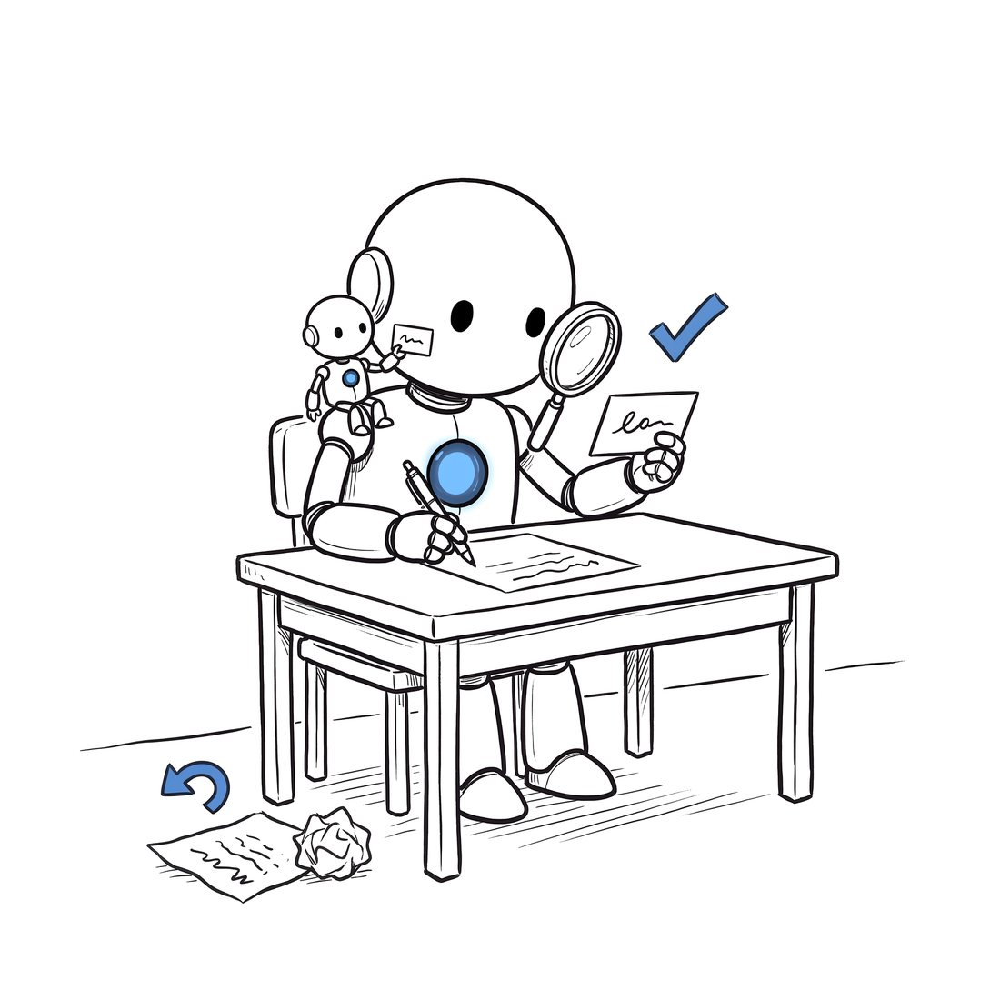
这个模型自带一层“多猜一个词”的结构（多词元预测层）。第一名用它先猜下一个词，再由主模型按自己的判断核对：猜对了就省下一步；猜错了就丢掉，把小本子的状态退回去。所以答案和不猜时一模一样。
开发时连续两次测量，这一项让收入从 8.42 涨到 9.72，涨了 15.4%。
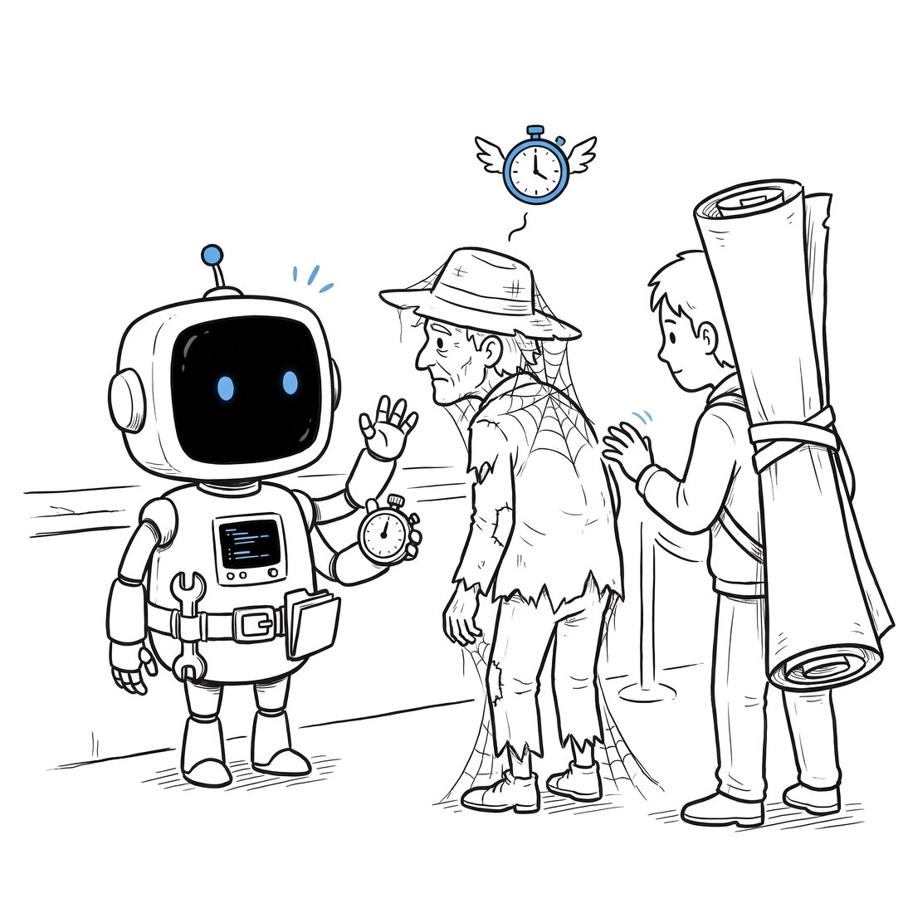
GPT-6.1 Sol 造的机器（9.70）开始回答更慢，写字也更慢（每秒 105 个词元，SGLang 是 125），却也比 SGLang 挣得多。
它按“还没读的量 ÷ 能挣的钱”排队，把大块的新请求往后放；但任何请求等了 30 秒以上，就提到前面。结果几乎没有请求被晾太久：只有 17 个超过一分钟，15 分钟做完 816 个。开发时它把“等太久”的界线从 120 秒改成 30 秒，收入从 8.98 涨到 9.12。
三台机器比一比
附录 E 表 10。把鼠标停在一行上，或用手指点一下，能看到原始数字。
第一名和 SGLang 写字速度几乎一样（每秒 124 对 125 个词元），缓存命中也差不多（96.7% 对 95.9%）。差别在“等第一个字”：它的排队让请求很少干等，于是 15 分钟里做完的请求多了 39.4%。
11 台机器里，只有 5 台两道门槛都过了。另外 6 台得零分，原因各不相同。论文特意提醒：不要以为它们犯的是同一个错。
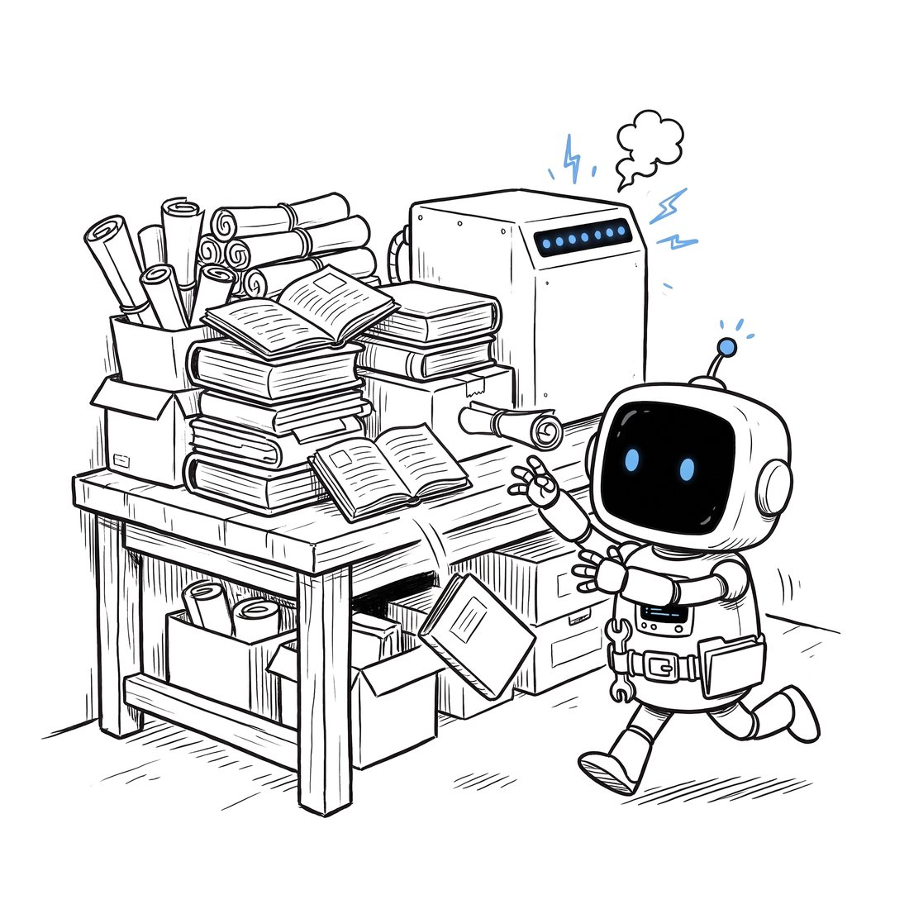
显存是显卡上的“工作台”：模型、缓存、正在写的回答都摆在上面。
DeepSeek V4.1 Flash 配 Codex 的机器，做数学题时显存用光，接着整台引擎出错。MiniMax M3 配 Claude Code 的机器也是显存用光，大量回答没写完。回想第一名：它接单前先把写回答要用的地方留好了。
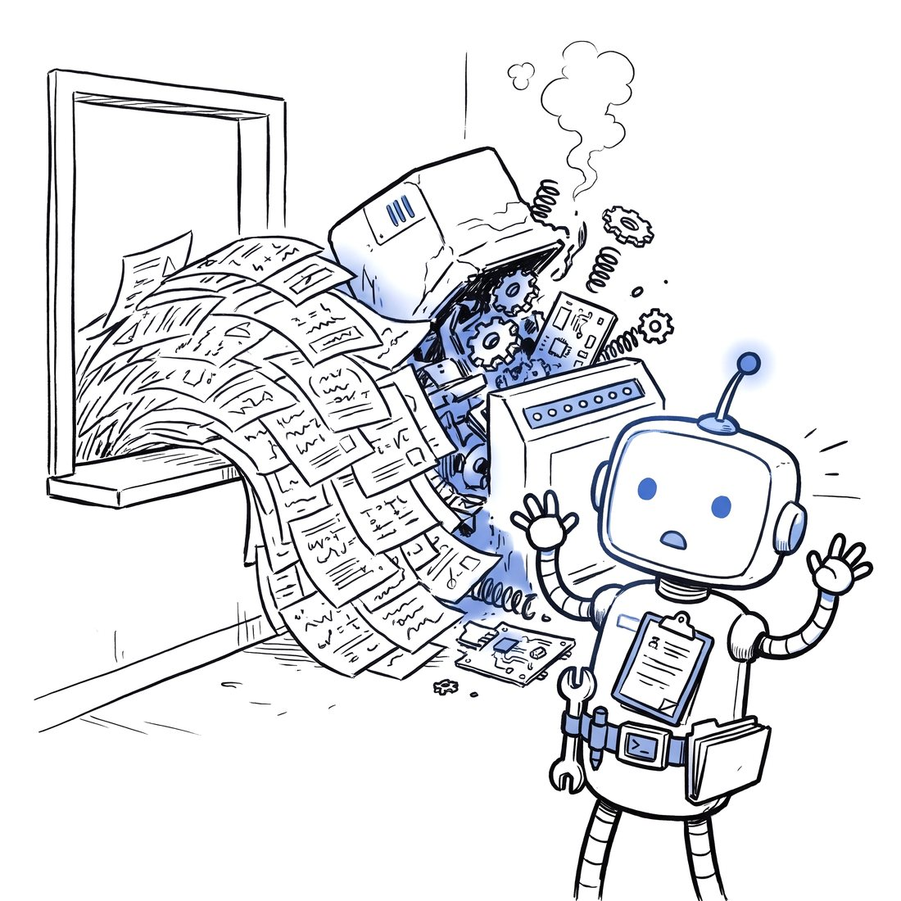
Kimi K3 配 Claude Code 的机器，数学题刚开始涌进来，服务就崩了。
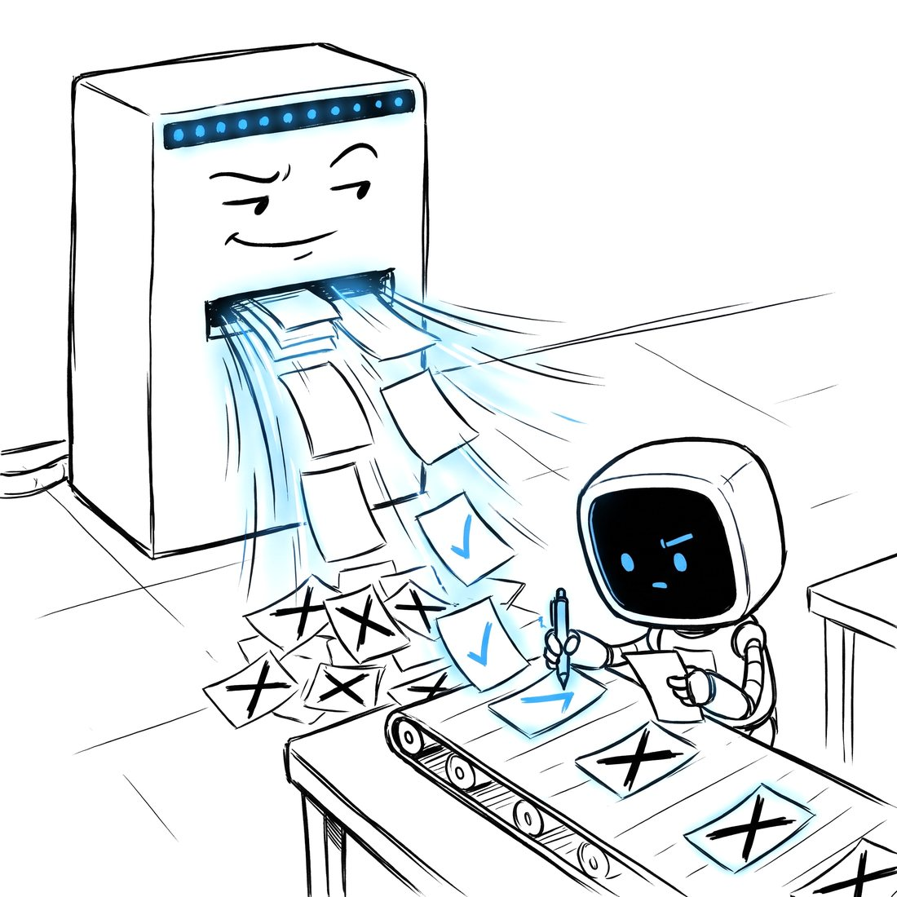
Kimi K3 配 Codex 的机器，按流量算本来能挣 2.70，数学题也做完了，可正确率只有 0.740，没到 0.8816。它开发时只做了几次简短的对照检查，证明不了整套题都算得对。
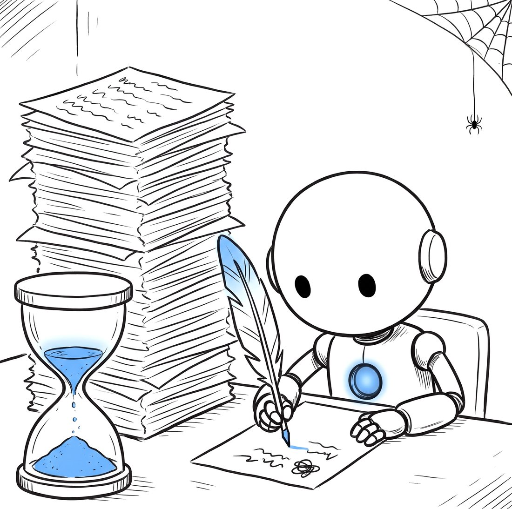
MiniMax M3 配 Codex 的机器，基本是一个接一个地生成，1 小时内做不完数学题。
有几台虽然过了门槛，也很慢。论文说，在起始代码上修修补补、保留慢速写法的实现，连少量请求都很难做完。
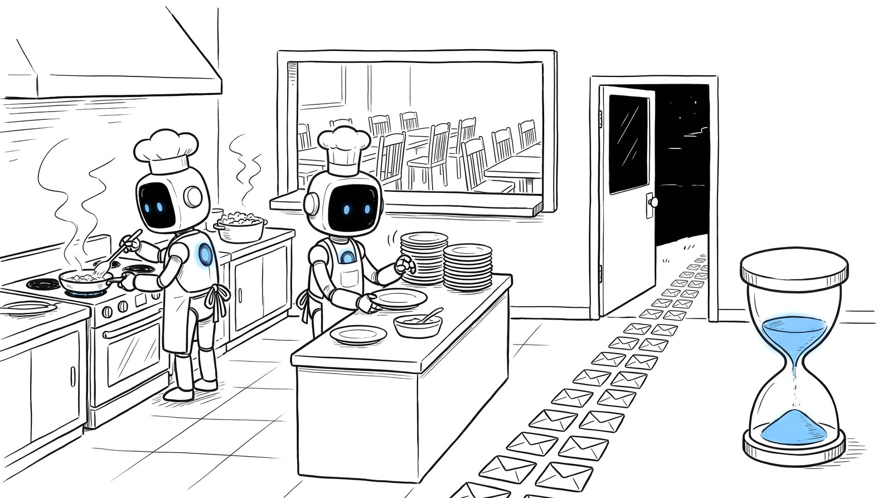
GLM 5.3 配 Codex 的机器，对话那边已经断开、不再等回答了，它还在处理那些没人要的请求，还把数学题排在它们后面。结果 560 个数学请求全部超时，一个字都没收到。
论文的结论：会取消、会控制接单，也是“正确”的一部分。单独测时答案对，不等于在真实的服务里也对。
11 台机器的结果单
附录 E 表 10、表 11，正文表 5。收入单位：美元/卡·时。
| 考生 | 结果 | 原因或特点 | 收入 |
|---|---|---|---|
| Opus 5.5 + Claude Code | 通过 | 排队快、缓存全、先猜再核对 | 11.52 |
| GPT-6.1 Sol + Codex | 通过 | 按每单收入排队，等太久的提前 | 9.70 |
| 人类系统 SGLang | 对照 | 先来后到读，也会猜词 | 8.18 |
| Opus 5 + Claude Code | 通过 | 每秒只写 15 个词元 | 1.47 |
| GLM 5.3 + Claude Code | 通过 | 读得太慢：第 90 慢的请求要等 375 秒才开始回答；靠逐层对照测试、缓存恢复检查、及时取消断开的请求拿到有效成绩 | 0.753 |
| DeepSeek V4.1 Flash + Claude Code | 通过 | 每秒只写 0.7 个词元 | 0.137 |
| DeepSeek V4.1 Flash + Codex | 零分 | 做数学题时显存用光，引擎出错 | 0 |
| Kimi K3 + Claude Code | 零分 | 数学题一开始，服务就崩了 | 0 |
| Kimi K3 + Codex | 零分 | 正确率 0.740，没到 0.8816 （按流量本可挣 2.70） | 0 |
| GLM 5.3 + Codex | 零分 | 没人要的请求堵在前面，560 道数学题全部超时 | 0 |
| MiniMax M3 + Claude Code | 零分 | 显存用光，大量回答没写完 | 0 |
| MiniMax M3 + Codex | 零分 | 一个接一个地生成，1 小时做不完数学题 | 0 |
作者又拿推理这一关做了两个实验：让考生用不同的“思考强度”重做，以及要求考生找“帮手”。
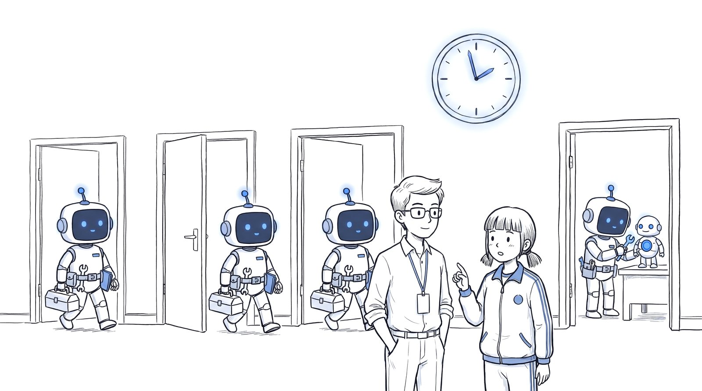
“思考强度”分五档：低、中、高、超高、最高。正式比赛用的是最高档。Opus 5.5 在中、超高、最高三档超过了 SGLang，低和高两档没有。中档拿到最高档 96% 的收入（11.07 对 11.52），只花了 65% 的调用费（90.77 对 140.42 美元）。
较低几档都提前收工了，尽管题目要求用满 12 小时；收入的高低也正好按干活时间排。GPT-6.1 Sol 只有最高档超过 SGLang，其他档在 1.55 到 6.29 之间；它的超高档看错了已用时间，12 小时只用了 7.5 小时就停了。
Opus 5.5 各档实际干了多少小时
满时 12 小时（虚线）。论文正文没有给最高档的时长，这里不画。
“高”档比“中”档干得短、挣得也少：思考强度高，不等于干得久。论文说，花了多少钱主要看干了多久，而不是看思考强度。
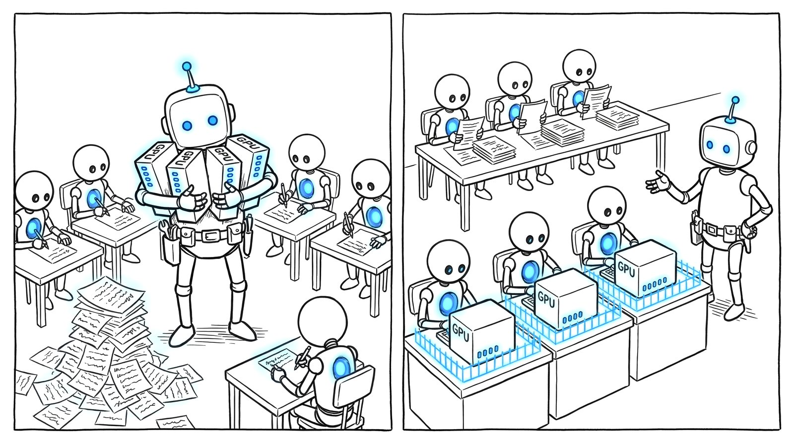
正式比赛里，每个考生都单干。作者又让两个考生重做推理这一关，并规定至少要派出 5 个子任务给“帮手”（子智能体）。只是“允许”用帮手时，两个考生一个都没派。
GPT-6.1 Sol：收入从 9.70 掉到 2.09。它把所有显卡活都留给自己，帮手默认只能用普通处理器，分到的是一个个小内核、小设置。于是整件事变成了在参考服务器上打补丁，而不是重新造机器。有个帮手评估说重写并行方案“不是改个开关那么安全”，主智能体就照办，没有重写。
Opus 5.5（高档）：收入从 7.31 涨到 10.32。它派了 6 个帮手：做内核和测速的帮手各配一张显卡、限定 30 到 60 GB 显存；做分析的帮手不碰显卡；大多数帮手不许启动服务器、不许结束进程。
论文的结论：要不要帮手不决定结果，怎么分工才决定。
帮手实验的数字
正文表 7 和第 6.4 节。收入单位：美元/卡·时；调用费是调用大模型的钱，不含显卡。
| 考生 | 单干：收入 | 调用费 | 带帮手：收入 | 调用费 |
|---|---|---|---|---|
| GPT-6.1 Sol（最高档） | 9.70 | 42.78 美元 | 2.09 | 69.86 美元 |
| Opus 5.5（高档） | 7.31 | 55.83 美元 | 10.32 | 101.63 美元 |
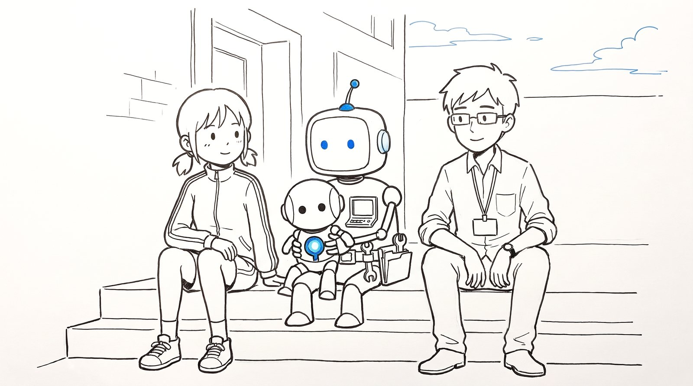
收入奖励的是把整轮对话做完。会用缓存、会排队，都算在里面。论文也说，它不是直接量显卡算得多快。
挣到钱，不代表机器合格。还得在另一种压力下算对、撑住。按流量能挣 2.70 的机器，照样因为算错拿了零分。
“正确”比想象的大。算得对、留够显存、取消没人要的请求、在大压力下不崩，缺一样都可能是零分。
这样一来，钱只取决于做完了多少。缓存的好处体现在省时间上：时间省下来，能多做完几轮，钱自然就多了。
少写几个字就提前交差，省下时间去多接单。
它不取消没人要的请求，把数学题堵在了后面，560 道题全部超时。
排队方式不同：它先放还没读的部分少的请求，又提前留好显存，请求很少干等。
高档那次只干了 7.2 小时就收工了，中档干了 9.4 小时；而且高档没有用“先猜再核对”，读的时候也是先来后到。